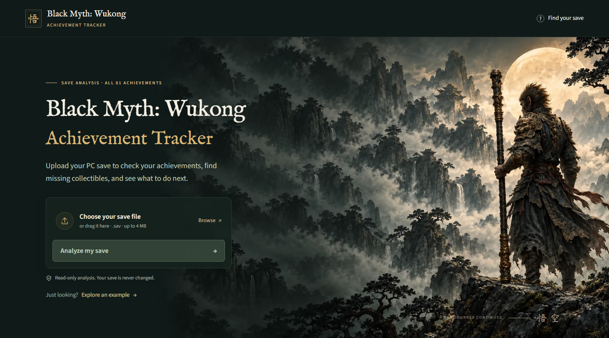
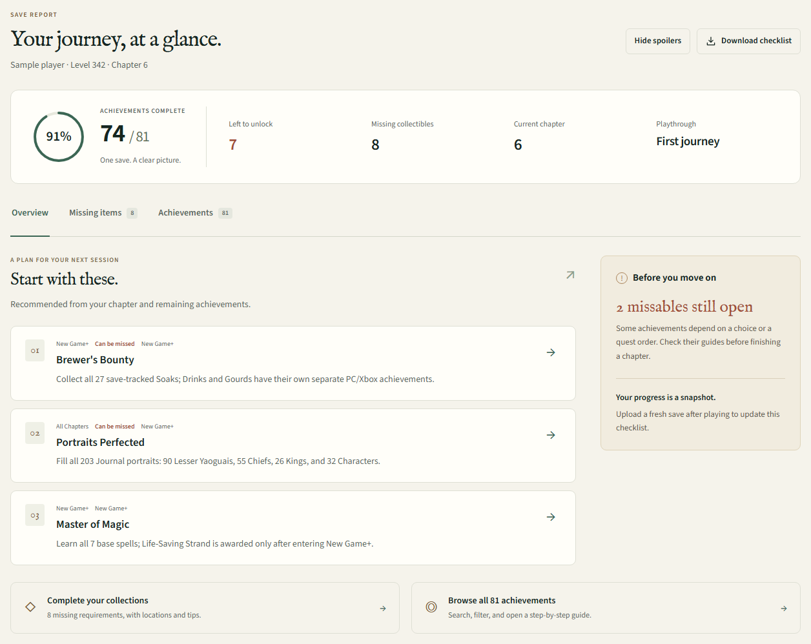
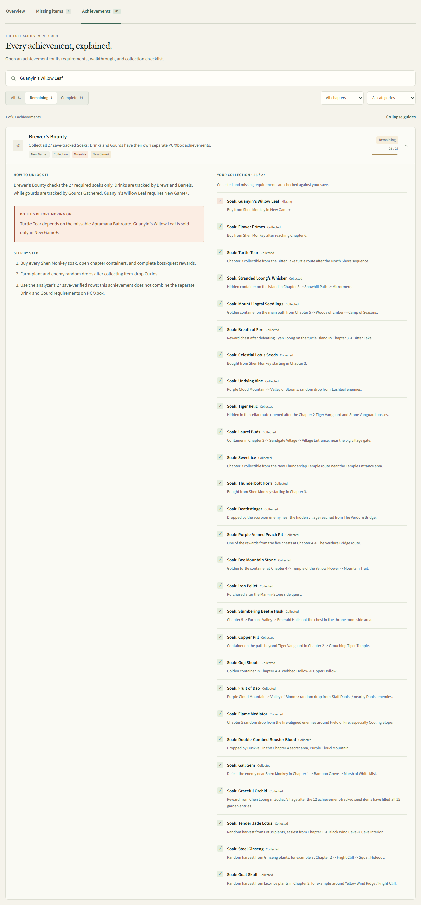

Black Myth: WukongChasing platinum
I wanted to know which collectibles I was missing and where to find them. That sent me into the save files.

I wanted to platinum Black Myth: Wukong. What I didn't expect was how annoying it would be to work out which items I was still missing.
I knew there were achievements left to finish. I could look up a guide and find a list of every soak, weapon, or curio in the game. But that still left me with the same job: compare the guide against my collection, work out what I already had, and then find out how to get everything else.
The guides could tell me where an item was. They couldn't tell me whether I needed it. I wanted a list for my playthrough: the things I hadn't collected, the achievements they belonged to, and the steps I could take next.
Doing that comparison by hand was becoming a chore. Somewhere in the game, there was already a record of my progress. Every time I loaded my save, the game knew which items I owned and which achievements I'd completed.
What if I could read the save file and ask it what I was missing?
That was the idea behind Journey Ledger, my Black Myth: Wukong achievement tracker. I started with a problem I wanted solved for myself. But I also wanted to make something other fans could use on their own hunt for platinum.
The idea sounded straightforward: read the save, compare it with the full collection, show what's left. Following it took me through three problems I hadn't fully appreciated at the start.
First, I had to work out what the save was telling me
A save file isn't a tidy checklist with item names beside little ticks. Before I could answer my original question, I needed a way to decode it.
I found a starting point in BlackWukongSaveEditer. The decoder and game-runtime assemblies used by that project could read the game's save structures. That gave me access to the underlying records, and I built the achievement analysis around them.
Being able to read those records was only the beginning. The samples I checked contained 180 raw achievement entries, while the guide I wanted to build had 81 achievements. Simply displaying every entry would give players a confusing list. I needed to select the right achievement IDs and match them to a consistent catalog of names and requirements.
Then there was the collection itself. Some achievements recorded completed requirement IDs. For weapons, armor, and curios, I needed to look at inventory and equipment ownership. The answer to “do I have this?” wasn't stored in the same place for every type of item.
I made the planner use the appropriate source for each collection, then combine those results into one report. That also meant being careful about what it claimed to know. If the save only exposed a quest's overall completion, I couldn't honestly mark every step of that quest as done.
Once those pieces were connected, the report started answering the question I'd actually asked. One nearly complete sample came back with 74 of 81 achievements finished, seven remaining, and eight missing tracked requirements. Instead of comparing whole collection lists by hand, I could concentrate on the gaps.

There was an important catch, though. A report could have the right counts and still send me looking for the wrong thing.
The last missing soak sent me deeper
Brewer's Bounty was where that became obvious. It asks you to collect all 27 soaks. One of the save samples had 26. That should have been the easiest possible demonstration of the tool: find the one missing item and name it.
Except the item mapping wasn't reliable yet.
The early table combined English names and locations from guides with an inferred ordering of the game's internal IDs. It looked reasonable. But a guide's order doesn't tell you which number the game assigned to an item.
The nearly complete save exposed the problem. It contained requirement 2327 and was missing 2301. The old mapping put Guanyin's Willow Leaf at 2327. Something didn't add up. The save could show that the mapping needed investigating, but it couldn't tell me the correct identity of every ID.
This was the rabbit hole. To fix the list properly, I had to go beyond the save and look at the game's own item data.
Using CUE4Parse to extract the runtime tables, I could follow the relationship the game already defined. The achievement table listed the requirement IDs for Brewer's Bounty. The item table used those same IDs for its items. Joining the two gave me the actual item behind each requirement.
That established 2301 as Guanyin's Willow Leaf and 2327 as Goat Skull. It also let me correct the rest of the 27-soak mapping instead of patching one suspicious row and hoping the others were right.
The table exposed Chinese item names, so there was still an English-name matching step. Guides were useful there, and for the acquisition instructions. But the connection between an ID and an item now came from the game's data.
Running the sample through the corrected mapping finally produced the answer I wanted: Guanyin's Willow Leaf was missing. Buy it from Shen Monkey in New Game+. That explained both what was left and why it belonged to the next playthrough.
See the full 27-soak checklistScreenshot 03

I kept the extraction method and the full mapping in the project notes. If a game update changes something, there's a way to check the relationship again. I don't want to be back to guessing from the order of a guide.
Then a first playthrough turned into New Game+
I also caught the tracker calling a first playthrough NG+1. The game counts journeys from one, so I had to subtract one to get the New Game+ count. That kept the recommendations on the right playthrough.
For the next person chasing platinum
I checked the tracker against seven saves at different stages of the game, including completed runs. The detailed results are below if you're curious.
I started this because I was tired of trying to work out what I was missing. Along the way, I ended up learning how the game records progress, correcting item mappings, and building the guide I wanted to have open beside me.
If you're chasing platinum too, I hope Journey Ledger saves you some of that same back-and-forth. There are plenty of things worth spending time on in Wukong. I wanted comparing inventory lists to take up a little less of it.
The tracker reads Windows .sav files and uses the game's 81-entry PC/Xbox achievement catalog. The hosted version sends the save to the server for analysis; you can also run it locally from the source.
Under the hood: experiments and source notesOptional reading
The API and browser records below are dated October 2, 2026, against tracker revision 42b7c81. The game-table extraction is the separate July 18 investigation documented in the mapping notes.
| Save sample | Complete | Remaining | Missing tracked rows | Soaks |
|---|---|---|---|---|
| Chapter 3 / midgame | 19 / 81 | 62 | 248 | 2 / 27 |
| Before Erlang | 46 / 81 | 35 | 163 | 9 / 27 |
| Chapter 5 / Red Boy | 58 / 81 | 23 | 96 | 18 / 27 |
| Chapter 6 / Phoenix | 58 / 81 | 23 | 96 | 18 / 27 |
| Near-perfect | 74 / 81 | 7 | 8 | 26 / 27 |
| NG+ / full collection | 81 / 81 | 0 | 0 | 27 / 27 |
| Progress 100 | 81 / 81 | 0 | 0 | 27 / 27 |
These are separate sample labels, not one continuous playthrough. All seven contained the platform achievement rows; none exercised the absent-row fallback or the special NG+ completion-recovery path. No platform-account achievement API was queried.
Seven invalid-upload checks covered the request format, missing and extra files, the extension, an empty save, undecodable bytes, and a file over the 4 MiB limit. The linked results include their observed HTTP responses. These were API and browser checks; the project has no dedicated unit-test project.
- Recorded API results (JSON) and browser checks and screenshot provenance (JSON).
- Python reproduction script and instructions. Use your own save samples; the original files and player identities aren't distributed with the blog.
- The inspected web app source and technical documentation.
- The soak-mapping investigation, including all 27 IDs, extraction hashes, and the English-name crosswalk.
- BlackWukongSaveEditer and CUE4Parse, which provided the starting points for save decoding and the documented table extraction.